FMOD Studio User Manual 2.02
- Welcome to FMOD Studio
- FMOD Studio Concepts
- Organizing the Project
- Authoring Events
- Working with Instruments
- Managing Assets
- Parameters
- Getting Events into Your Game
- Mixing
- The Sandbox
- Editing During Live Update
- Profiling
- Dialogue and Localization
- Using Source Control
- Supporting Downloadable and User-generated Content
- Advanced Topics
- Quick Start Tutorial
- Event Macros Drawer Reference
- Instrument Reference
- Plug-in Reference
- Modulator Reference
- Parameters Reference
- Scripting
- Scripting API Reference
- Keyboard Shortcut Reference
- Troubleshooting
- Glossary
- Appendix: Celeste Getting Started Guide
- Appendix: Reaper Integration
29. Appendix: Reaper Integration
The Reaper integration allows for the linking of a Reaper project as a linked project asset. Linking a Reaper project imports all of its rendered audio files as linked audio assets. Linked audio assets are updated and refreshed automatically if changes in the source Reaper project file are detected. The Reaper integration can also be used to import the timeline of a Reaper project.
This chapter assumes familiarity with the Reaper user interface. For more information regarding the rendering process and script actions in Reaper, visit the official website of Reaper at www.reaper.fm.
29.1 Setting up the Reaper Integration
The path to the Reaper executable defaults to C:\Program Files\REAPER (x64)\reaper.exe on Windows, /Applications/REAPER64.app/Contents/MacOS/REAPER on the Mac OS X, and /opt/REAPER/reaper on Linux. If Reaper is installed to a different path, the Reaper executable location can be overridden using the "Reaper application path" setting in the DAW tab of the preferences dialog.
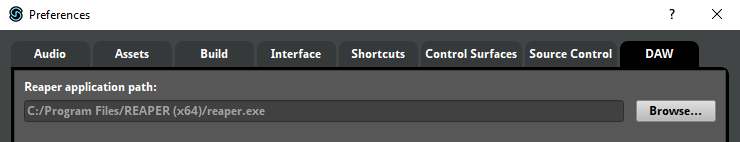
By default, a linked project asset will set its "Project Path" field to the absolute path of its corresponding Reaper project file (.rpp). This behavior can be customized by specifying a folder in the "Reaper projects folder (optional)" field which will cause linked project assets to store relative paths, when possible.
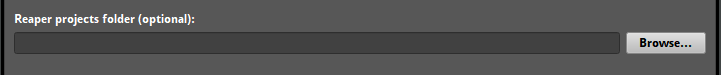
By default, a linked project asset is rendered whenever a change is detected in the corresponding Reaper project file (e.g. after saving project changes in Reaper or when syncing the Reaper project file via source control). Alternatively, automatic rendering can be deferred until an FMOD Studio window receives focus or disabled entirely. Rendering can be manually triggered via the "Refresh" context menu item of a linked project asset in the assets browser.
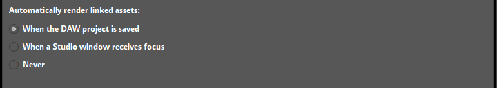
When Reaper project rendering is triggered, either automatically or manually, any stale linked audio assets will be removed if their corresponding Reaper rendered audio files are no longer on disk. If manual removal of the linked audio assets is preferred, the automatic removal behavior can be disabled entirely.
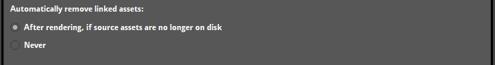
29.1.1 Using both Reaper and FMOD Studio on Linux
Reaper on Linux uses JACK as its output mode by default. FMOD Studio only supports PulseAudio (which is enabled by default) and ALSA. To be able to effectively use FMOD Studio with Reaper, we recommend either:
Changing Reaper's output mode to PulseAudio:
- In Reaper, go to "Options > Preferences...".
- Choose device from the audio section.
- Change audio system to "PulseAudio".
Routing PulseAudio to JACK:
- Install QJackCtl and pulseaudio-module-jack (
sudo apt install qjackctl pulseaudio-module-jackon Debian based Linux distributions). - In QJackCtl, click setup, select the options tab, tick "Execute script after Startup".
- Add
pactl load-module module-jack-sink channels=2; pactl load-module module-jack-source channels=2; pacmd set-default-sink jack_outto the "Execute script after Startup" text box.
For more information about combining JACK and PulseAudio, see this article.
29.2 Linking to a Reaper Project
Linking to a Reaper project, can be done via dragging the Reaper project file (.rpp) from a file manager into the assets browser.

Linked project assets can be moved and renamed, as with other assets. A linked project asset will reference the source Reaper project file by either an absolute or relative path, based on the "Reaper projects folder (optional)" field. The path to the Reaper project can be modified by entering a different path in the "Project Path" field.
By default, each rendered audio file that resides in the same folder as the Reaper project file is imported as a linked audio asset. This behavior can be customized by selecting the linked project asset in the assets browser and entering an absolute or relative path (relative to the Reaper project file) in the "Rendered Assets Path" field. A linked project asset can be expanded in the assets browser to reveal any linked audio assets that it contains.
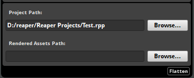
A linked audio asset is bound to its containing linked project asset and cannot be rearranged or renamed. Any changes made to a Reaper project will be synchronized by importing newly rendered audio files, removing any stale linked audio assets and refreshing any modified linked audio assets. You can customize how and when assets are synchronized in the DAW tab of the preferences dialog.
29.3 Using Reaper Project Assets in an Event
A linked audio asset within a linked project asset can be used in an instrument, as with other audio assets. When a linked audio asset is modified, a refresh will be triggered to update any of its usages. This is equivalent to triggering "Refresh" manually with the asset selected in the assets browser.
29.4 Unlinking a Reaper project
A linked project asset can be converted into a regular asset folder which will convert all of its linked audio assets into to regular audio assets. This can be done by selecting "Unlink DAW Projects..." from the context menu of a linked project asset in the assets browser. The encoding settings on the linked project asset and its linked audio assets will be preserved and any references to the linked audio assets will be replaced with the converted audio assets.
29.5 Installing the Reaper Timeline Exporter
The Reaper integration also supports importing the timeline of a Reaper project as an event.
To enable importing a timeline from Reaper, a custom ReaScript needs to be installed to Reaper's script folder. The script can then be used to export a Reaper project timeline to a .timeline.fsprometa metafile. The script can be installed to a designated folder from the DAW tab of the preferences dialog by clicking on the "Install to Reaper..." button.
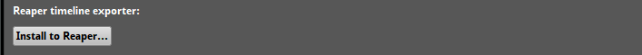
The default installation path for the exporter script is the REAPER/Scripts resource directory. This is usually %APPDATA%/REAPER/Scripts on Windows and $HOME/Library/Application Support/REAPER/Scripts on Mac OS X.
To use the installed script in Reaper, it must first be loaded using the actions window that can be opened from the "Actions > Show action list..." menu option.
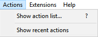
Click on "New Action > Load ReaScript..." and look for the fmod-studio-integration.eel script in the folder selected during the installation process.
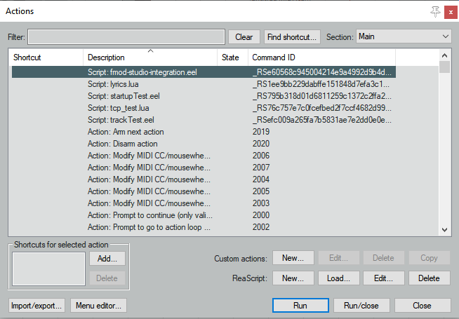
Once the script is loaded, it will appear in the list of actions. To generate the .timeline.fsprometa metafile, select the script and hit the "Run" button.
Optionally, if the SWS/S&M extension is installed, the script can be setup as a project startup action. This will allow the metafile to automatically be generated the next time the project is opened, or when the project is loaded as part of the rendering process.
29.6 Importing Reaper Timeline as an Event
To export the project timeline correctly, each track and region within the project must have a valid name. Additionally, the project's render options must be configured as follows:
- Source: "Region render matrix"
- File name: "$track_$region"
- Directory: Must match the "Rendered Assets Path" field of the linked project asset. It is best to set this to a path that differs from the media files location of the Reaper project, so that media files used in the Reaper project are not imported as linked audio assets.
- Output format: Must be set to "WAV".
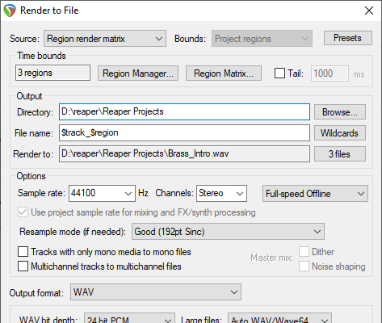
Each track in the project will be exported to the .timeline.fsprometa metafile. Additionally, single instruments will be generated based on the region render matrix. For each of the render matrix entries on a given track, a single instrument will be exported with the corresponding start time, length, and linked audio asset.
Each marker in the project will also be exported to the metafile. Unnamed markers will be exported with their name set to match their ID.
Once the metafile for a Reaper project is generated, it can be imported as an event by dragging the Reaper project file (.rpp) from a file manager into the events browser. Doing so creates a linked project asset for the Reaper project file, if it is not already linked. If the Reaper project is already linked, the linked project asset can be dragged from the assets browser into the events browser to create an event.
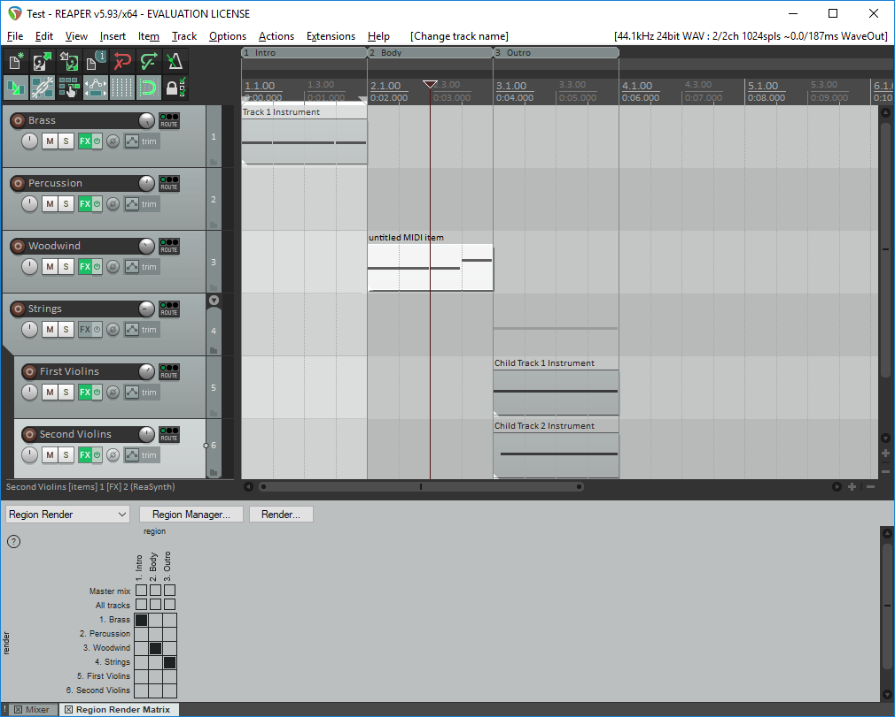
In the example pictured above, six tracks will be exported and the name of the tracks are "Brass", "Percussion", "Woodwind", "Strings", "First Violins", and "Second Violins" respectively. Based on the region render matrix, three single instruments will be exported and placed on the tracks. For example, this would export a single instrument starting at 00:00.000 with a length of 00:02.000 on the "Brass" track, using the rendered audio file "Brass_Intro.wav".
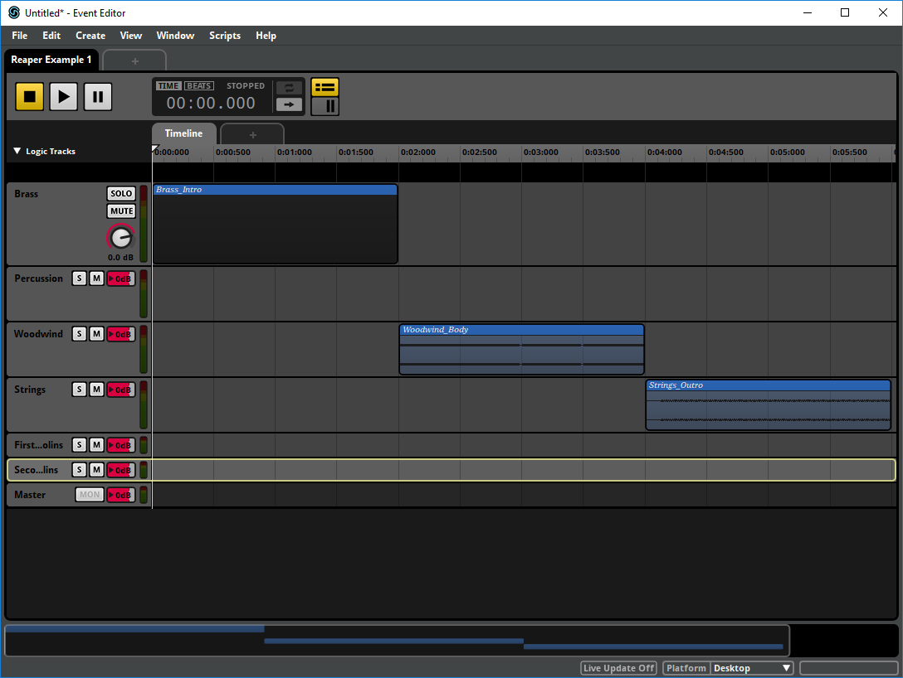
The picture above illustrates the imported event based on the first Reaper project example, where the region render matrix was set to render with entries for each track.
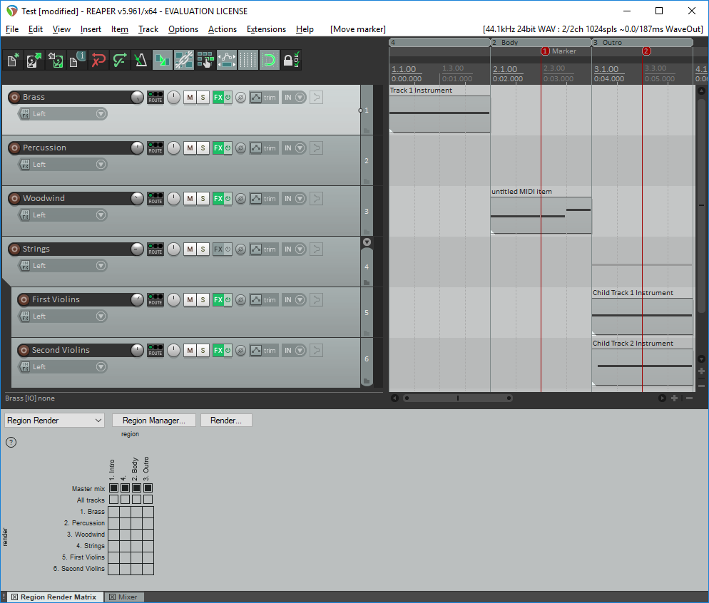
In the example pictured above, similar to the previous example, six tracks will be exported. By setting the region render matrix to export the master mix only, three single instruments will be exported and placed on the master track of an event. The marker at 00:03.000 would be exported with the name "Marker" and the unnamed marker at 00:05.000 will be exported with the name "2".
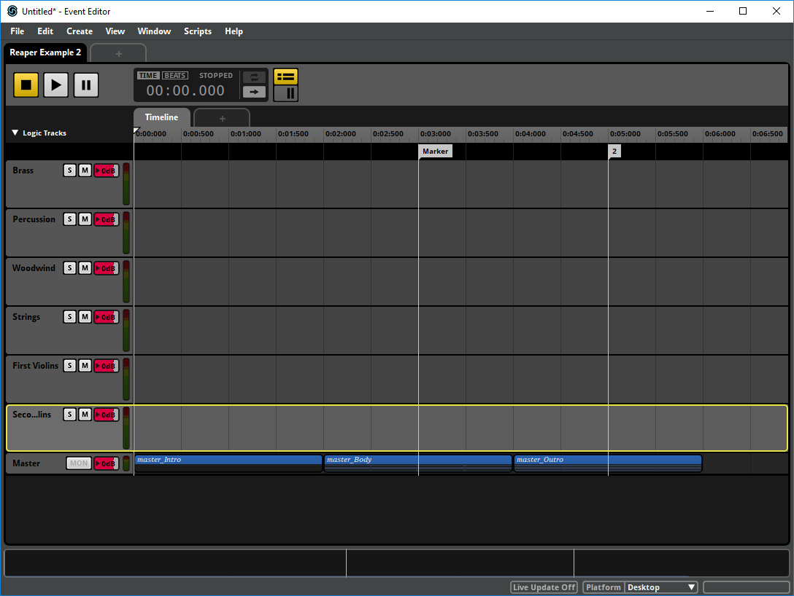
The picture above illustrates the imported event based on the second Reaper project example, where the render matrix was set to render for the master mix only. Also included are the two destination markers with the name "Marker" and "2" respectively.